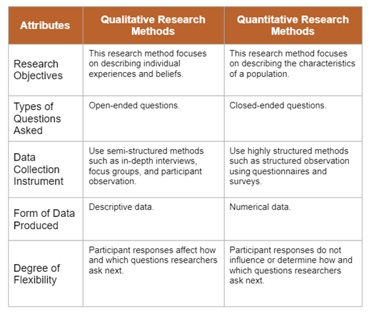

Who I am
I am an Information Technology Risk Management Specialist with more than ten years’ experience in the IT audit, controls, and risk management. I have experience in all “three lines of defence” within an Organisation.
ARUN NAVARATNASINGAM's E-PORTFOLIO IS DEVELOPED BASED ON PROJECTS AND ASSIGNMENTS FOR THE MSC CYBER SECURITY PROGRAMME.

I am an Information Technology Risk Management Specialist with more than ten years’ experience in the IT audit, controls, and risk management. I have experience in all “three lines of defence” within an Organisation.

Here are a few of my hobbies and intrests

INTRODUCTION MODULE
This module addresses the concepts and principles in the field of Cyber Security, the governance and ethical frameworks and competencies required as a Cyber Security professional.
| Name | Description |
|---|---|
| What? | This module is the initial and introduction module which covers cybersecurity 101. Numerous group meetups were conducted with significant participation. Also, students were tasked with two Collaborative Learning Discussions, one Individual Essay and one Python code project. Collaborative Learning Discussion 1: Why is Cyber Security a global issue, and why is it important for companies to invest in Cyber Security? Collaborative Learning Discussion 2: Two security technologies and the context in which they can be employed. Individual Essay: Based on a problem, produce a report to management providing the following information: Details of the benefits of the ASMIS and the potential problems, including potential cyber threats to the system. The report must include at least two UML diagrams. Each diagram should show aspects of the system and a threat modelling technique that can be used to identify and mitigate potential cyber threats Background to the UML diagrams and modelling techniques, along with justifications for their use with supporting references. Cyber Security technologies can be used to address the problem, discussing the strengths and weaknesses of the solutions with references to examples in which the technology has been employed. End of Module Assignment: OOP application of principles and concepts: Implement a Python code of one solution recommended as part of the report submitted in Unit 9. |
| So What? | Even though this is an introductory module, students learned a significant amount of information due to the diverse background and experience, specifically during the seminars. Collaborative Learning Discussion 1: The students discussed various views related to the importance of Cyber Security. Also, discussions highlighted the necessity of why organizations should improve their Cyber Security posture. Collaborative Learning Discussion 2: Several security technologies with appropriate context were discussed. Also, justifications and benefits were discussed. The discussions also expanded to include the technology limitations and compensation controls. Individual Essay: This assignment enabled the students to assess a problem using various tools, such as UML diagrams and identify potential solutions. Application of the tools to a situation like a real work example is an excellent benefit of this assignment. End of Module Assignment - OOP application of principles and concepts: This assignment helped the students to apply security practices within the solution development. This module helped the students learn various software development tools like Python, security elements incorporated with the development and database security. |
| Now What? | Students can build and develop based on the solid fundamental knowledge learned and experienced from this module. |

NETWORK AND INFORMATION SECURITY MANAGEMENT PRINCIPLES
Network and Information Security Management (NISM) module is focused on the concept of Information Security Management (ISM) and the application of networking and network security assessment tools.
Cybersecurity is a shared responsibility and isn't the responsibility of a single person, team or unit of the organisation (Carpenter, 2021). Therefore cybersecurity personnel must be equipped with technical skills and other skills critical to interact and communicate with others within the organisation. I have grouped the learning outcomes into the following key groups.
Technical Skills:
Other Skills:
This module was developed based on three essential activities - Assignments, Formative and e-Portfolio Activities, and Seminars.
Based on the activities, various artefacts were developed and mapped against those activities below:
| Summative Component | Description of the Artefacts | Location/Link |
|---|---|---|
| Development Team Project: Design Document (Unit 6) | The Design Document includes details of potential security vulnerabilities, a list of relevant standards and their compliance status, and a list of recommendations and mitigation strategies. | See GitHub for artefacts |
| Development Team Project - Executive Summary (Unit 11) | The Executive Summary includes a summary of the work executed concerning the website, finding details presented in an executive summary format, evaluation results against two security standards, recommendations and conclusions. | See GitHub for artefacts |
| Individual Module e-Portfolio (Unit 12) | This is the final deliverable – a learning and development e-portfolio. | See GitHub for artefacts |
| Component | Description of the Artefacts | Location/Link |
|---|---|---|
| Collaborative discussion 1 (Units 1 – 3) | The summary post of Collaborative discussion 1 includes critical threats and vulnerabilities highlighted in the paper and mitigation strategies against those. | See GitHub for artefacts |
| Practical and Team activity (Unit 3) | This Practical and Team activity deliverable includes information collected by scanning the website using standard tools ping, traceroute, dig and nslookup. | See GitHub for artefacts |
| Collaborative discussion 2 (Units 4 – 6) | The summary post of Collaborative discussion 2 includes several scans performed as part of this activity. | See GitHub for artefacts |
| e-Portfolio activity (Unit 7) | This e-Portfolio activity deliverable includes attributes about Kali Linux and similar tools, including Nessus. | See GitHub for artefacts |
| Scanning exercise and Wiki (Unit 7) | This Scanning exercise and Wiki deliverable include information collected using commonly used tools in Kali Linux. | See GitHub for artefacts |
| Collaborative discussion 3 (Units 8 -10) | The summary post of Collaborative discussion 3 includes the elements of the GDPR that the case study highlights, remediation approach, potential mitigation steps. | See GitHub for artefacts |
| Session Title | Description of the Artefacts | Location/Link |
|---|---|---|
| Introductory session and group allocation for Team Project (Unit 1) | The final group contract highlights the group member's approach, roles, and responsibilities to complete the project effectively. | See GitHub for artefacts |
| STRIDE and DREAD tools (Unit 2) | The STRIDE and DREAD tools deliverable includes the risks ratings related to the risks discussed in Collaborative Learning Discussion 1. | See GitHub for artefacts |
| TCP/IP v ISO/OSI (Unit 4) | The TCP/IP v ISO/OSI deliverable includes feedback to a question comparing the TCP/IP and ISO/ OSI 7-layer model. | See GitHub for artefacts |
| Evaluation exercise (Unit 6) | This e-Portfolio activity deliverable includes attributes about Kali Linux and similar tools, including Nessus. | See GitHub for artefacts |
| Security Standards (Unit 8) | The Security Standards deliverable includes evaluation results of the website against the appropriate standards, appropriate recommendations and assumptions. | See GitHub for artefacts |
| Data Breach case study (Unit 10) | The Data Breach case study deliverable includes details about the data breach case study selected. | See GitHub for artefacts |
| Debate Vote (Unit 12) | The Debate Vote deliverable includes advantages related to future Internet technology. | See GitHub for artefacts |
The reflection activity is completed using the "Rolfe, Freshwater, & Jasper 'What' Model." This is a consolidated reflection for the module, and a detailed reflection for each activity can be viewed online.
Meeting notes and feedbacks were recorded in various forms. Some of them were formal collaborations via Open Forum discussions, and some of them were informally documented in Google drive and Discord channels. However, whether the feedback was formal or informal, that was helpful to continue my great work or improve my skills, if necessary. Listed below were a few critical feedbacks provided during this module:
Collaborative Learning Discussion 1: https://www.my-course.co.uk/mod/hsuforum/discuss.php?d=256036
Collaborative Learning Discussion 2 (This is a group deliverable): https://www.my-course.co.uk/mod/hsuforum/discuss.php?d=259675
Collaborative Learning Discussion 3: https://www.my-course.co.uk/mod/hsuforum/discuss.php?d=262860
Google Drive: See GitHub for details
Discord Channel: See GitHub for details

Carpenter, P. (2021) Building a culture of cybersecurity: 3 key takeaways from the 2021 SANS report. Available from: https://www.securitymagazine.com/articles/95568-building-a-culture-of-cybersecurity-3-key-takeaways-from-the-2021-sans-report [Accessed 25 July 2021].
InnerDrive. (N.D.) 10 ADVANTAGES AND DISADVANTAGES OF GROUP WORK IN THE CLASSROOM. Available from: https://blog.innerdrive.co.uk/advantages-disadvantages-group-work [Accessed 25 July 2021].
Barnett, J. (2020) Feedback Doesn't Just Help Us Perform. It Helps Us Transform. Available from: https://www.forbes.com/sites/jimbarnett/2020/03/03/feedback-doesnt-just-help-us-perform-it-helps-us-transform/?sh=31698b5360f0 [Accessed 25 July 2021].
Brathwaite, S. (2021) Which is better Parrot OS or Kali Linux?. Available from: https://www.securitymadesimple.org/cybersecurity-blog/which-is-better-parrot-os-or-kali-linux [Accessed 25 July 2021].

Principles of Digital Forensics and Cyber Law
TBD

Research Methods and Professional Practice
A research's success depends on various factors, such as research methods and related professional practices. In addition, understanding the data collected, the methods used to analyse, and techniques used to present the data in a meaningful manner can positively impact the research's outcome. This module was structured to enable the students to succeed in this module and the final capstone project by preparing the students with the necessary skills related to professional research practices. Additionally, this module is also considered to focus on solid communication skills to interact and communicate with key stakeholders within the organisation. The learning outcomes have been grouped into the following key groups.
Research Design: Exploratory Research; Conclusive Research
Research Methods
Qualitative Research - Tools and Techniques:
Quantitative Research - Tools and Techniques:
Mixed Methods Research
See Figure 1 for different attributes of qualitative and quantitative research methods.
Figure 1: Attributes (Essex, n.d.)
Data Collection Methods: Primary Research; Secondary Research
Measures and Inference
Analysing Qualitative Data

| Unit | Description of the Artefacts | Location/Link |
|---|---|---|
| Unit 1: Scientific Investigation and Ethics | This Collaborative Learning Discussion 1 discussed the Medical Implant case study related to implantable heart health monitoring devices with a potentially vulnerable hard-coded value. | See the collaborative learning discussion link |
| This reflective activity assesses computing ethics based on the Stahl et al. (2016) paper. | See GitHub for artefacts | |
| Unit 2: Research Questions, the Literature Review and the Research Proposal | These posts provide feedback to fellow students as part of collaborative learning. | See the feedback links |
| Unit 3: Research Methods | This post summarises the discussions related to implantable heart health monitoring devices with a potentially vulnerable hard-coded value. | See the summary post link |
| Unit 4: Case Studies, Focus Groups and Observations | This literature review outline provides a high-level overview of the literature review. | See GitHub for artefacts |
| This case study related to privacy assesses the ethical issues involved. | See GitHub for artefacts | |
| Unit 5: Interviews and Survey Methods | This case study related to the inappropriate use of customer data, similar to Cambridge Analytica, assesses the impact. | See GitHub for artefacts |
| Unit 6: Questionnaire Design | This formative activity related to data collection discusses the approach for project data collection, assessment, etc. | See GitHub for artefacts |
| Unit 7: Validity and Generalisability in Research | This Collaborative Learning Discussion 2 discussed the ethical concerns related to a researcher based on the data, organisational expectations and public expectations. | See the collaborative learning discussion link See the summary post link |
| Unit 8: Inferential Statistics | These artefacts are based on the unit 8 exercises. | See GitHub for artefacts |
| Unit 9: Analysing Qualitative Data | These artefacts are based on the unit 9 exercises. | See GitHub for artefacts |
| Unit 10: Research Writing | This presentation discusses the key points related to the proposal. | See GitHub for artefacts |
| Unit 11: Professional Development – Your e-Portfolio | This e-Portfolio highlights the key learnings and outcomes related to this module. | See e-Portfolio |
| Unit 12: Project Management and Managing Risk | This self-test quiz provides a snapshot of the knowledge level of project management practices. | See GitHub for artefacts |

| Exe Ref# | Exercise Description | Results |
|---|---|---|
| 8.1 | Open the Excel workbook in Exe 8.1B.xlsx from the Exercises folder. Obtain the sample size, sample mean weight loss, and the sample standard deviation of the weight loss for Diet B. Place these results in the block of cells F23 to F25, using the same format as that employed for the Diet A results in the above example. Briefly interpret your findings. What do these results tell you about the relative effectiveness of the two weight-reducing diets? |
See Appendix for results and GitHub link for detials |
| 8.2 | Open the Excel workbook in Exe 8.1B.xlsx from the Exercises folder. Obtain the sample size, sample mean weight loss, and the sample standard deviation of the weight loss for Diet B. Place these results in the block of cells F23 to F25, using the same format as that employed for the Diet A results in the above example. Briefly interpret your findings. What do these results tell you about the relative effectiveness of the two weight-reducing diets? |
See Appendix for results and GitHub link for detials |
| 8.3 | Open the Excel workbook in Exe 8.3D.xlsx from the Exercises folder. Obtain the frequencies and percentage frequencies of the variable Brand, but this time for the Area 2 respondents, using the same format as that employed for the Area1 results in the above example. Briefly interpret your findings. What do these results tell you about the patterns of brand preferences for each of the two demographic areas? |
See Appendix for results and GitHub link for detials |
| 8.4 | Consider the filtration data of Data Set G. Open the Excel workbook Exe8.4G.xlsx, which contains these data from the Exercises folder. Assuming the data to be suitably distributed, complete a two-tailed test of whether the population mean impurity differs between the two filtration agents and interpret your findings. |
See Appendix for results and GitHub link for detials |
| 8.5 | Recall that in Exercise 8.4, a two-tailed test was undertaken of whether the population mean impurity differs between the two filtration agents in Data Set G. Suppose, instead, a one-tailed test had been conducted to determine whether Filter Agent 1 was the more effective. What would your conclusions have been? |
See Appendix for results and GitHub link for detials |
| 8.6 | Consider the bank cardholder data of Data Set C. Open the Excel workbook Exe8.6C.xlsx, which contains this data from the Exercises folder. Assuming the data to be suitably distributed, complete an appropriate test of whether the population mean income for males exceeds that of females and interpret your findings. What assumptions underpin the validity of your analysis, and how could you validate them? |
See Appendix for results and GitHub link for detials |
| 9.1 | Open the Excel workbook in Exe 9.1D.xlsx from the Exercises folder. This contains the percentage frequencies together with the bar chart just created in the above example. Add a percentage frequency bar chart showing the brand preferences in Area 2, using the same format as that employed for the Area1 results in the above example. Drag your new chart so that it lies alongside that for Area 1. Briefly interpret your findings. What do these results tell you about the patterns of brand preferences for each of the two demographic areas? |
See Appendix for results and GitHub link for detials |
| 9.2 | Open the Excel workbook in Exe 9.2E.xlsx from the Exercises folder. This contains the frequency distributions for Data Set E (see the Data Annexe), to which has been added the corresponding percentage frequency distributions. Complete a percentage frequency clustered column bar chart showing the heather species prevalences in the two different locations. Briefly interpret your findings. |
See Appendix for results and GitHub link for detials |
| 9.3 | Open the Excel workbook in Exe 9.3B.xlsx from the Exercises folder. This contains the relative frequency histogram for the Diet A weight loss produced in Example 9.3 together with some of the Diet B weight loss summary statistics. Add a relative frequency histogram of the weight loss for Diet B, where possible, using the same classes as those employed for the Diet A results in the above example. Briefly interpret your histogram. What do these results tell you about the patterns of weight loss for each of the two diets? |
See Appendix for results and GitHub link for detials |
Literature Review:
The literature review was constructed into three key components – introduction, review and conclusion. A significant amount of information - background and importance of the topic - was provided in the introduction, with necessary references; highlighted an overview of current knowledge on cyberbullying.
The literature review component covered a vast range of previous work completed and arranged into seven themes. Each of them was discussed and assessed with supporting details and references; well demonstrated the awareness of relevant, current literature about cyberbullying. The grouping can be limited to two or three themes, and additional information can be provided—for example, the common components between those and differences.
The conclusion was articulated based on the information and highlighted potential future works, demonstrating the research and writing skills.
Research Proposal:
The research proposal had three deliverables – the presentation, transcript, and recording. The presentation covered key topics, including but not limited to project title, significance/contribution to the discipline, research question, aims and objectives, literature related to the project, methodology, ethical considerations, description of artefact(s) and timeline of proposed activities. In addition, the presentation demonstrated a firm understanding of the research topic end-to-end and was presented clearly with appropriate graphical representation.
The transcript was developed well to support the presentation, with sufficient supporting details and references. In addition, the transcript was coherent and informative, with a comprehensive list of references demonstrating broader reading on the topic.
The recording was completed at a reasonable speed so that anyone could comprehend the topic. However, a real connection to the audience could be improved.
The "Rolfe, Freshwater, & Jasper 'What' Model" is used to document the reflection. The reflection address the three key elements - impact on your personal/professional experience, statistical analysis skills and research methods process based on your learning in this module.
SEE GITHUB FOR DETAILS
PROFESSIONAL SKILLS MATRIX AND ACTION PLAN: SEE GITHUB FOR DETAILS
Shvong. (2019) Individual Assignments vs Group Assignments for Students - Shvong. Available from: https://www.shvong.com/individual-assignments-vs-group-assignments-for-students/ [Accessed 25 March 2022].
Boud D. 2015. Feedback: ensuring that it leads to enhanced learning. Clin Teach. 12:3–7.
Telio S, Ajjawi R, Regehr G. 2015. The "educational alliance" as a framework for reconceptualising feedback in medical education. Acad Med. 90:609–614.
Learning, T. and University Libraries. (2015) The Purpose of Research Questions. Available from: https://ohiostate.pressbooks.pub/choosingsources/chapter/purpose-of-research-questions/ [Accessed 25 March 2022]
du Prel, J.-B., Röhrig, B., Hommel, G. and Blettner, M. (2010) Choosing Statistical Tests. Deutsches Aerzteblatt Online, 107(19). Available from: https://www.ncbi.nlm.nih.gov/pmc/articles/PMC2881615/ [Accessed 25 March 2022].